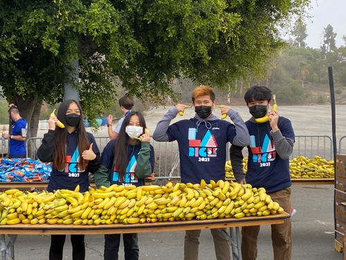
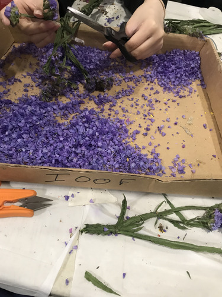
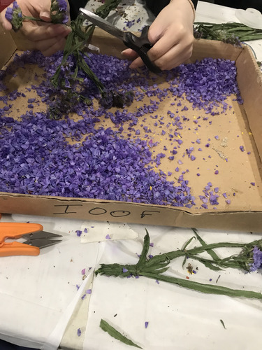

Ryan Trinh
I'm Ryan. I graduated from Rosemead High School not too long ago and was a part of my school's community, being apart of our Key Club, Link Crew, and ASB. In Key Club, I attended various service and volunteering opportunities, including marathons, holiday events, fundraisers, and food and clothing drives. In Link Crew, I used my leadership to guide incoming freshmen and sophomores who needed help and advice on adjusting to their new high school lives. I was assigned a group of freshmen and sophomores, and whenever they needed help with homework, clubs, general advice, I'd be there. It brought me great communication skills and helped me gain a further understanding of peers younger than me and how to work with them. In ASB, I mainly helped with big events such as our orientation, renaissance fairs, homecoming game and dance, and prom. Whether it be setting up displays, painting posters, I was there. Outside of high school, I worked and volunteered at a summer school for a few years. As a teacher's assistant, kids there would ask for help on any of the work given out or just a general explanation of what had been taught by the teacher. I made an effort to enrich those kids with the proper information at all times like I was the teacher myself. Sometimes, the teacher would ask for help on menial tasks like fetching supplies or reading the white board, but I would usually be put on the spot and had to give my answers or thoughts for what was being taught. Whether that be an analysis of something the kids read in class, or a math equation. Outside of the classroom, I made sure kids would be safe out at the playground and not get into arguments or disputes with each other. I limited fights and generally tried to teach the kids to play nice with each other. Overall, working at the summer school had brought out a more mature side of me I’d see in authority figures in my life, such as my teachers and parents whom I greatly looked up to and was glad to see made a positive impact on my leadership skills.
Now, I am currently an undergraduate student at The University of California Riverside, majoring in business. Starting in pre-business with courses revolving around pre-business, I will eventually enroll in the school of business within UC Riverside, pursing a bachelor's degree in business administration, and finally ending with business informatics.
My goal ultimately, is to have a career in cyber security, possibly under a company or government facility sector. I am reaching this goal as I go through my time in college and have been looking at internships during the summer for my sophomore and junior years and jobs related to cyber security.
Experience
Teaching Assistant
• Reinforced learned material to students through one-on-one or groups
• Taught students proper behavior and class rules
• Took attendance and calculated grades
Link Crew Leader
• Guide incoming underclassmen
• Facilitate success of underclassmen
Key Club Volunteer/Member
• Volunteered at various service events
• Aided during marathons, and holiday events
• Raised money for fundrasiers
• Donated food and clothes during food and clothes drives
Education
University of California Riverside
Portfolio



